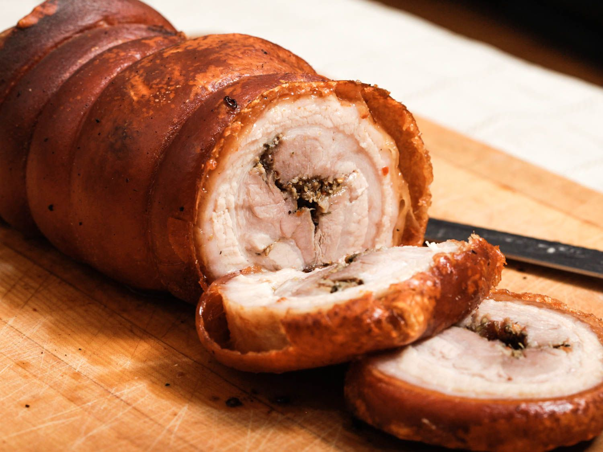

Chef John's Baby Porchetta

Description
"This bacon-wrapped pork tenderloin with such great taste is amazingly moist and tender," says Chef John.
Ingredients
- 1/2 teaspoon whole fennel seeds
- 3 cloves garlic
- 1 tablespoon sage leaves
- 2 teaspoons groun pepper
- 2 teaspoons rosemary
Instructions
- Crush fennel seeds in mortar with a pestle for 1 minute. Add garlic, sage, pepper, rosemary, salt, red pepper flakes, and lemon zest; pound into a thick paste, 2 or 3 minutes. Add olive oil and pound until rub is evenly incorporated.
- Cut a slit 3/4 of the way through the center of the tenderloin, leaving 1 inch on each end uncut. Spread 1 tablespoon of the rub inside the slit; close up roast. Spread the remaining rub evenly over the roast. Wrap bacon strips around the roast, trying to keep seams on the bottom.
- Wrap roast in plastic wrap and refrigerate for 1 hour.
- Preheat oven to 450 degrees F (230 degrees C). Line a rimmed baking sheet with aluminum foil; place roast in the center.
- Roast in the preheated oven until an instant-read thermometer inserted into the center registers 134 degrees F (57 degrees C), about 25 minutes. Let roast rest for 10 minutes and internal temperature rise to 140 to 145 degrees F (60 to 63 degrees C).
Back to main page